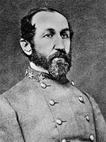

|

|

|
|
|
Confederate Brigadier general and educator Josiah Gorgas was
born on July 1, 1818 in Running Pumps, Pennsylvania to
Joseph Gorgas and Sophia Atkinson Gorgas. He graduated from
West Point in 1841, ranking sixth in his class and was
assigned to the Corps of Ordnance, the branch of the army
concerned with military supplies and materials. In the
Mexican-American War he played a major role in positioning
the American guns used to bombard Mexican positions at Vera
Cruz and commanded the Ordnance Depot supporting Scott's
campaign to Mexico City.
Following the War, he served at several arsenals
including Mount Vernon, Alabama where he met and married
Amelia Gayle, daughter of a prominent state politician.
Dissatisfied by internal United States Army politics and
strongly pro-Southern, he resigned his commission in the
U.S. Army and accepted appointment as Confederate Chief of
Ordnance in April 1861.
Faced with major difficulties from the beginning, Gorgas
worked hard to coordinate the several southern states
ordnance agencies into a unified system. He worked quickly
to establish Confederate controlled arsenals and armories
and coordinate the contracts of various private firms. He
based his department on a decentralized model that depended
on the talents of subordinate offices who had wide
discretion in the administration of their depots and
arsenals. By 1863 Gorgas had done as well as anyone could
to supply the Confederacy with arms and equipment. Proudly,
he recorded in his diary: "Where three years ago we were not
making a gun, pistol nor a sabre, no shot nor shell - a
pound of powder - we now make all these in quantities to
meet the demand of our large armies." As the war dragged on,
however, Gorgas encountered increasingly difficult problems
as raw materials became less available, labor shortages
became acute, and important sites of production fell to
Union advances.
Following the War, Gorgas purchased and ran the
Brierfield Iron Works in Alabama. He sold the facility in
1869 and accepted appointment at the University of the South
where he played a vital role in establishing the school's
curriculum and physical plant. In August 1878, he accepted
the presidency of the University of Alabama. Gorgas died in
Tuscaloosa, Alabama, May 15, 1883.
Source: Joan Waugh, ed., Facts on File Encyclopedia of American
History: Civil War and Reconstruction, 1856 to 1869 (New York: Facts on
File, 2003), 151-152.
|